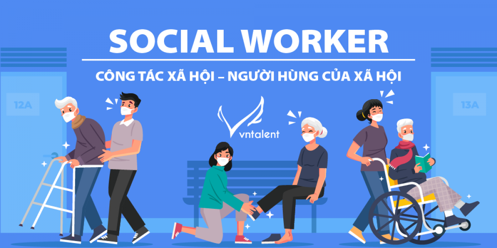

Kỳ Thi Tốt Nghiệp THPT 2026

Thời gian: 11-12/6/2026
Dự kiến những điểm mới
Tại Hội nghị tổng kết công tác tổ chức Kỳ thi tốt nghiệp THPT năm 2025 và chuẩn bị Kỳ thi tốt nghiệp THPT năm 2026, Cục trưởng Cục Quản lý chất lượng Huỳnh Văn Chương đã thông tin về dự kiến công tác tổ chức Kỳ thi tốt nghiệp THPT năm 2026.
Theo dự kiến, Kỳ thi tốt nghiệp THPT năm 2026 tổ chức vào ngày 11, 12/6/2026 - sớm hơn so với các năm trước.
Kỳ thi năm 2026 giữ ổn định như năm 2025 và dự kiến có một vài điều chỉnh để bảo đảm phù hợp với mô hình quản lý chính quyền địa phương 2 cấp, đồng thời tiếp tục áp dụng công nghệ thông tin trong các khâu tổ chức thi. Các điều chỉnh dự kiến không ảnh hưởng tới thí sinh.
Cụ thể:
- Sửa đổi các quy định liên quan đến thanh tra, kiểm tra trong Kỳ thi để bảo đảm phù hợp với việc chuyển bộ phận thanh tra giáo dục các cấp về Thanh tra Chính phủ và Thanh tra tỉnh.
- Điều chỉnh lại một số quy định, quy trình tổ chức thi để bảo đảm phù hợp và thuận tiện hơn cho các đơn vị trong bối cảnh sắp xếp lại đơn vị hành chính cấp tỉnh.
- Giảm thời gian thu nhận đơn phúc khảo để thông báo kết quả phúc khảo sớm hơn đồng thời thuận tiện cho công tác tuyển sinh của các cơ sở giáo dục đại học, giáo dục nghề nghiệp. Điều chỉnh quy trình chấm phúc khảo để tăng cường hiệu quả, chất lượng.
Xem chi tiết tại đây
Quay lại trang chủ
Hành Trang Tiếp Ứng

Ngành Công tác xã hội (CTXH)
Ngành Công tác xã hội (CTXH) là lĩnh vực chuyên môn hỗ trợ, can thiệp giúp cá nhân, gia đình và cộng đồng vượt qua khó khăn, nâng cao chất lượng cuộc sống và phát huy năng lực tự giải quyết vấn đề. Đây là ngành nhân văn, kết hợp kiến thức khoa học và kỹ năng thực hành để hỗ trợ nhóm người yếu thế, với cơ hội việc làm rộng mở tại các cơ quan, tổ chức phi chính phủ, bệnh viện, trường học và trung tâm bảo trợ.
Tổng quan:
Mã ngành: 7760101.
Thời gian đào tạo: Đại học (4 năm).
Văn bằng: Cử nhân Công tác xã hội.
Tính chất: Nhân văn, hướng tới xã hội công bằng và phát triển bền vững.
Cơ hội việc làm:
- Tổ chức phi chính phủ (NGO), trung tâm bảo trợ xã hội, trại giam, bệnh viện, trường học.
- Vị trí: Chuyên viên tham vấn tâm lý, cán bộ phát triển cộng đồng, quản lý ca, nhân viên bảo vệ trẻ em/người cao tuổi, nhà nghiên cứu chính sách.
- Thu nhập: Khởi điểm từ 8-10 triệu đồng/tháng, có thể cao hơn (15-40 triệu đồng) nếu làm tại các tổ chức quốc tế.
Yêu cầu kỹ năng:
- Giao tiếp, lắng nghe, thấu cảm (EQ cao), tư vấn, tham vấn, lập kế hoạch.
- Nhân ái, kiên nhẫn, chịu được áp lực cao.
Những điều tôi đã chuẩn bị
- ✔ Ôn tập đầy đủ kiến thức lớp 12
- ✔ Luyện đề thường xuyên
- ✔ Chuẩn bị tâm lý vững vàng
- ✔ Tìm hiểu kỹ ngành CTXH và các trường đào tạo
- ✔ Rèn luyện kỹ năng giao tiếp và thấu cảm
Quay lại trang chủ